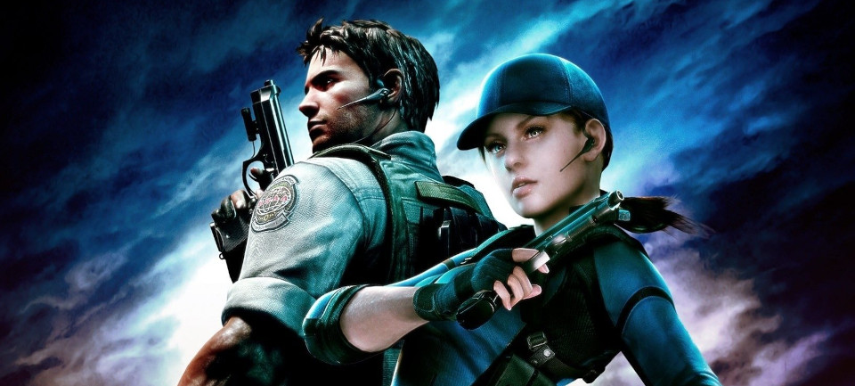

Plot
In 2009, five years after the events of Resident Evil 4, Chris Redfield, now an agent of the Bioterrorism Security Assessment Alliance (BSAA), is dispatched to Kijuju in Africa. He and his new partner Sheva Alomar are tasked with apprehending Ricardo Irving before he can sell a bio-organic weapon (BOW) on the black market.
When they arrive, they discover that the locals have been infected by the parasites Las Plagas (those infected are called "Majini") and the BSAA Alpha Team have been killed. Chris and Sheva are rescued by BSAA's Delta Team, which includes Sheva's mentor Captain Josh Stone. In Stone's data Chris sees a photograph of Jill Valentine, his old partner, who has been presumed dead after a confrontation with Albert Wesker.
Chris, Sheva and Delta Team close in on Irving, but he escapes with the aid of a hooded figure. Irving leaves documents that lead Chris and Sheva to marshy oilfields. This is where Irving's deal is to occur, but they discover that the documents are a diversion. When Chris and Sheva try to regroup with Delta Team, they find the team slaughtered by a BOW; Sheva cannot find Stone among the dead. Determined to learn if Valentine is still alive, Chris does not report to headquarters.
Continuing through the marsh, they find Stone and track down Irving's boat with his help. Irving injects himself with a variant of the Las Plagas parasite and mutates into a huge octopus-like beast. Chris and Sheva defeat him, and his dying words lead them to a nearby cave to learn more. The cave is the source of a flower used to create viruses previously used by the Umbrella Corporation, as well as a new strain named Uroboros.
Chris and Sheva find evidence that Tricell, the company funding the BSAA, took over a former Umbrella underground laboratory and continued Umbrella's research. In the facility, they discover thousands of capsules holding human test subjects. Although Chris finds that one of the capsules is Valentine's, it is empty.
When they leave, they discover that Tricell CEO Excella Gionne has been plotting with Wesker to launch missiles with the Uroboros virus across the globe; it is eventually revealed that Wesker hopes to take a chosen few from the chaos of infection and rule them, creating a new breed of humanity. Chris and Sheva pursue Gionne but are stopped by Wesker and the hooded figure, who is revealed to be a mind-controlled Valentine.
Gionne and Wesker escape to a Tricell oil tanker; Chris and Sheva fight Valentine, subduing her and removing the mind-control device before she orders Chris to follow Wesker; Chris and Sheva board the tanker and encounter Gionne, who escapes after dropping a case of syringes; Sheva keeps several. When Chris and Sheva reach the main deck, Wesker announces over the ship's intercom that he has betrayed Gionne and infected her with Uroboros.
She mutates into a giant monster, which Chris and Sheva defeat. Valentine radios in, telling Chris and Sheva that Wesker must take precise, regular doses of a virus to maintain his strength and speed; a larger or smaller dose would poison him. Sheva realizes that Gionne's syringes are doses of the drug. Chris and Sheva follow Wesker to a bomber loaded with missiles containing the Uroboros virus, injecting him with the syringes Gionne dropped. Wesker tries to escape on the bomber; Chris and Sheva disable it, making him crash-land in a volcano.
Furious‚ Wesker exposes himself to Uroboros and chases Chris and Sheva through the volcano. They fight him, and the weakened Wesker falls into the lava before Chris and Sheva are rescued by a helicopter, which is piloted by Valentine and Stone. As a dying Wesker attempts to drag the helicopter into the volcano, Chris and Sheva fire rocket-propelled grenades at Wesker, killing him. In the game's final cutscene, Chris wonders if the world is worth fighting for. Looking at Sheva and Valentine, he decides to live in a world without fear.